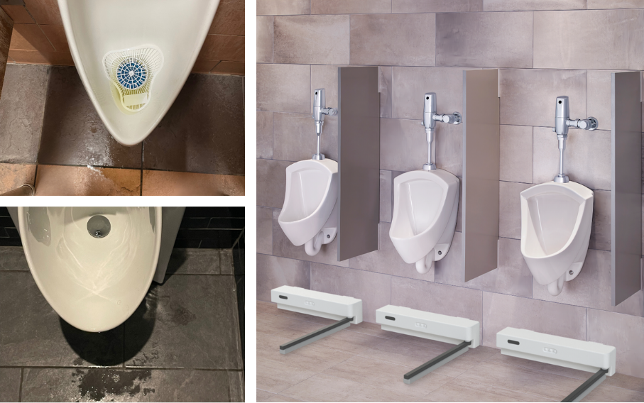

Introducing Whiz Wiper™
Automated Cleaning for Urinal Floors
Keep your restrooms consistently clean with a practical, automated solution designed for high‑traffic urinals. No gimmicks—just a reliable way to simplify your cleaning routine.
Talk to Us About Whiz Wiper™

The Challenge & Our Approach
Persistent Hygiene Challenges
High-traffic restrooms often suffer from inconsistent cleaning, particularly around urinals where manual cleaning can be labor-intensive and error-prone.
Our Practical Solution
Whiz Wiper™ automates urinal floor cleaning with smart sensors and robust design, ensuring consistent hygiene while reducing maintenance costs and effort.
Get in Touch
We’re looking to gather feedback and refine our approach. Talk to us about how Whiz Wiper™ could help address your restroom cleaning challenges.
Talk to Us About Whiz Wiper™